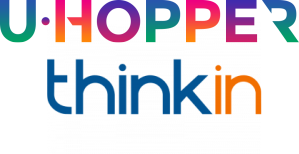

Mondiali Russia 2018 Challenge¶

Sponsor: U-Hopper
Daniele, CEO di U-Hopper, ha deciso di diventare ricco per poter andare a fare il baby-pensionato ad Antigua. Dato che pero’ diventare ricco facendo l’imprenditore si e’ rivelata una strada lunga e tortuosa (piu’ del previsto, almeno), ha avuto un’idea geniale (a suo parere, ndr). Con i soldi dell’azienda assumera’ un data scientist, e lo mettera’ a lavorare in segreto su un progetto speciale. Da appassionato di calcio, Daniele conosce bene il mondo delle scommesse online. E da ex ricercatore ne sa abbastanza di big data e intelligenza artificiale per sapere che un algoritmo ben congegnato da un brillante data scientist puo’ facilmente battere la logica (e gli algoritmi) delle varie piattaforme di scommesse online. E il caso di Soccermatics , con un ritorno del 1.800% in circa un anno gli conferma che e’ sulla buona strada. L’occasione per fare il botto e’ dietro l’angolo, ed e’ rappresentata dai mondiali di Russia 2018. Con una stima di 5.45 miliardi di euro investiti in scommesse durante i mondiali, e’ chiaro che una intelligenza artificiale ben allenata puo’ fare ricco il suo creatore. E l’idea di Daniele e’ di sfruttare, oltre ai dati statistici consueti (ranking FIFA, storico delle partecipazione ai Mondiali etc.) anche dati dalle news e dai social media per intercettare quei piccoli segnali che potrebbero predire il risultato. Con un budget iniziale di 1.000 euro, quanto riuscira’ a realizzare Daniele durante i mondiali, usando il prodigioso algoritmo progettato dal suo data scientist?
a. Analisi¶
Se fossimo in grado di prevedere le partite con buona accuratezza e li pubblicassimo, potremmo pensare di attrarre una buona quantità di scommettitori sul nostro sito. Quanti potrebbero essere?
descrivere / capire la strategia di investimento
descrivere il modello (e differenza tra parametrico / non parametrico)
b. Pulizia di dati¶
pulizia dei dati (data cleaning) : convertire il risultato di ogni partita i.e. 5-3 in vinta (V), persa (P), pareggiata (X) in modo da semplificare il modello
c. Integrazione dati¶
Vi sono disponibili diverse statistiche sulle squadre. Per essere effettivamente riutilizzabili andrebbero unite, per esempio si potrebbe unire il ranking degli ultimi anni ai risultati delle squadre
d. Sviluppo del modello di predizione¶
Le attività precedenti sarebbero da supporto all’effettivo sviluppo di un modello che permetta di predire i risultati. In termini più tecnici, bisognerebbe effettuare il training del il modello e variare i pesi di ogni caratteristica (feature) in modo da ottimizzare i risultati.
e. Sviluppo chatbot¶
Se avanza tempo, si potrebbe provare a creare una specie di chatbot in Jupyter, in cui l’utente può domandare al bot l’esito delle partite future. (nota: non sarà necessario creare un servizio web).
f. Lavorare alla presentazione¶
Forse più che nelle altre challenge sarà necessario lavorare ad una presentazione convincente, che sia un po’ più elaborata del “Col mio sistema diventi ricco sfondato”. Dovrebbero esserci considerazioni sulla strategia di investimento. E’ conservativa? Aggressiva? A quale pubblico si rivolge? Il pensionato? Il giovane con la propensione al rischio ?
Dati¶
Come dati useremo i FIFA Soccer Rankings dal 1993 to 2018
FIFA Soccer Rankings¶
Risultati match internazionali¶
Risultati match internazionali dal 1872 to 2018
Scarica il file: results.csv.zip
FIFA World Cup 2018 data set¶
Scarica il file: world-cup-2018.csv
Dati news¶
I dati news sono forniti da SpazioDati. Per il file completo chiedere a david.leoni@unitn.it
[ ]: